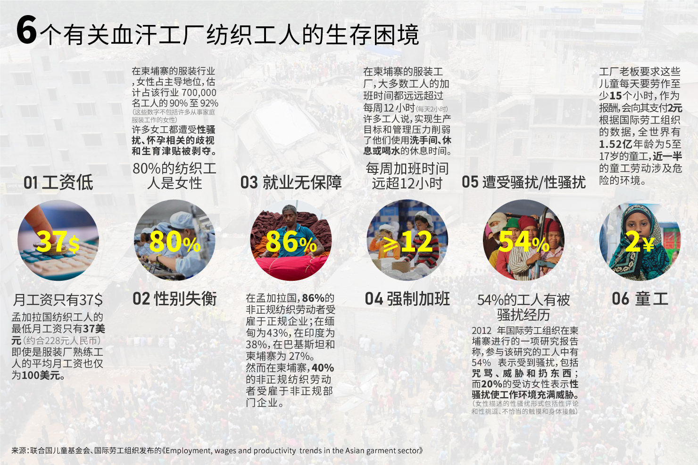

能源消耗和血汗工厂
在快时尚的驱动下，无停歇的生产和无节制消费带来的结果是无限扩张的廉价劳动力市场。中国制造至今仍是闻名世界的标签，但事实上随着中国经济发展，人工成本提升，服装制造业早已向人工成本和地价都更低廉的下游国家发展。像在土耳其、摩洛哥和越南等出口大量服装的东南亚及南亚各国，都有着庞大的工人群体。
在廉价劳动力的吸引力下，快时尚品牌蜂拥而至，建立代工工厂；本地工厂主急于扩大产能，置生产条件和安全措施于不顾；更有成千上万的农村女性，或懵懂少女，或孩子的母亲，甚或幼年童工，在温饱梦想的驱使下涌进这些“血汗工厂”。加上政府监管不力，导致意外和灾难频发。
2013年4月25日，位于孟加拉国首都达卡郊区的一幢8层高的楼房轰然倒塌，当时楼内超过3000人。截至5月13日，遇难人数多达1127人。这栋倒塌的制衣工厂有3层是违章建筑，没有预设另3层的地桩，也没有预设承受8层楼的重型制衣机器。据报道，就在事发前的几小时，工人告诉主管大楼要塌了，但是主管还是把他们赶进工厂，声称“不进去工作就不发工资”。

制作团队：冀怡欣
欧阳馨晽 肖清扬
指导老师：吴小坤
制作单位：华南理工大学新闻与传播学院
责任编辑：吴悠
出品：南方周末全媒体实验室
参考资料